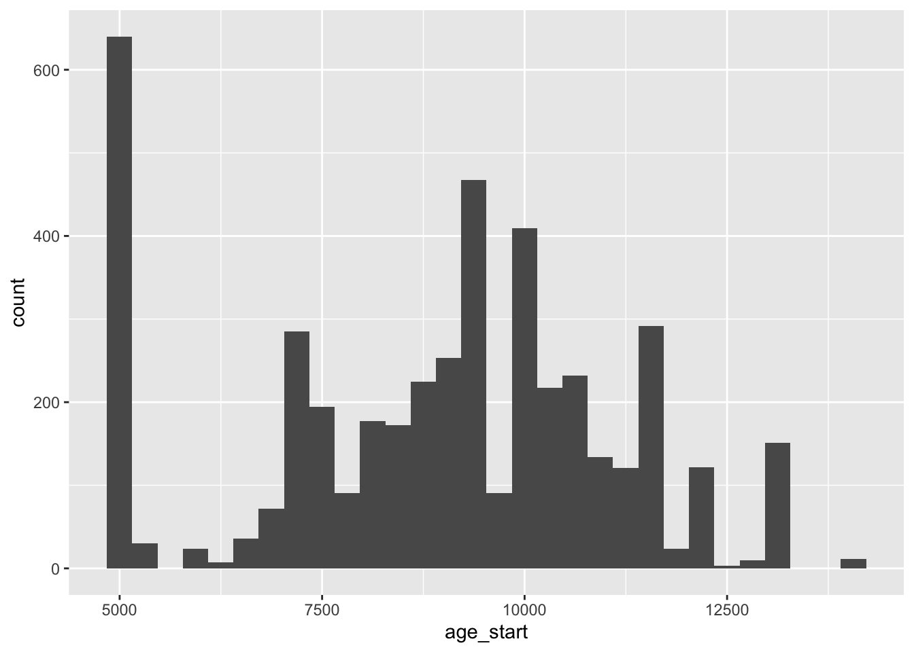
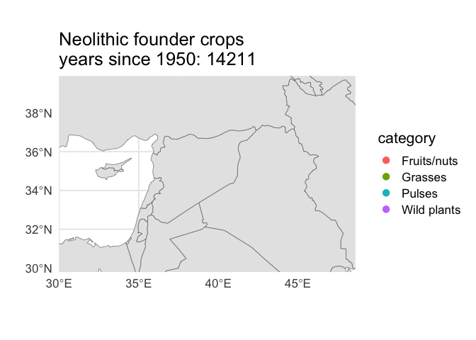

library(tidyverse)
library(praise)
library(sf)
library(rnaturalearth)
library(gganimate)Neolithic Founder Crops
The Data
The data this week comes from The “Neolithic Founder Crops”” in Southwest Asia: Research Compendium. “Revisiting the concept of the ‘Neolithic Founder Crops’ in southwest Asia” is an open-access research paper that uses the data. Thank you for sharing your research, @joeroe!
crops <- readr::read_csv("founder_crops.csv")crops %>%
ggplot(aes(x = age_start)) +
geom_histogram()
How do crops change over time?
Base map taken from @nrennie.
world <- ne_countries(scale = "medium", returnclass = "sf") |>
filter(subregion != "Antarctica")
p <- crops %>%
filter(!is.na(category)) %>%
droplevels() %>%
#filter(age_start > date, age_end < date) %>%
ggplot() +
geom_sf(data = world) +
geom_jitter(mapping = aes(x = longitude,
y = latitude,
colour = category),
size = 3) +
coord_sf(xlim = c(30.0, 48.6),
ylim = c(29.8, 39.9),
expand = FALSE) +
labs(x = "",
y = "") +
theme_minimal(base_size = 16) +
transition_events(start = -age_start,
end = -age_end,
enter_length = 100,
exit_length = 100) +
labs(title = 'Neolithic founder crops \nyears since 1950: {as.integer(-frame_time)}' )
animate(p, start_pause = 15, end_pause = 15)